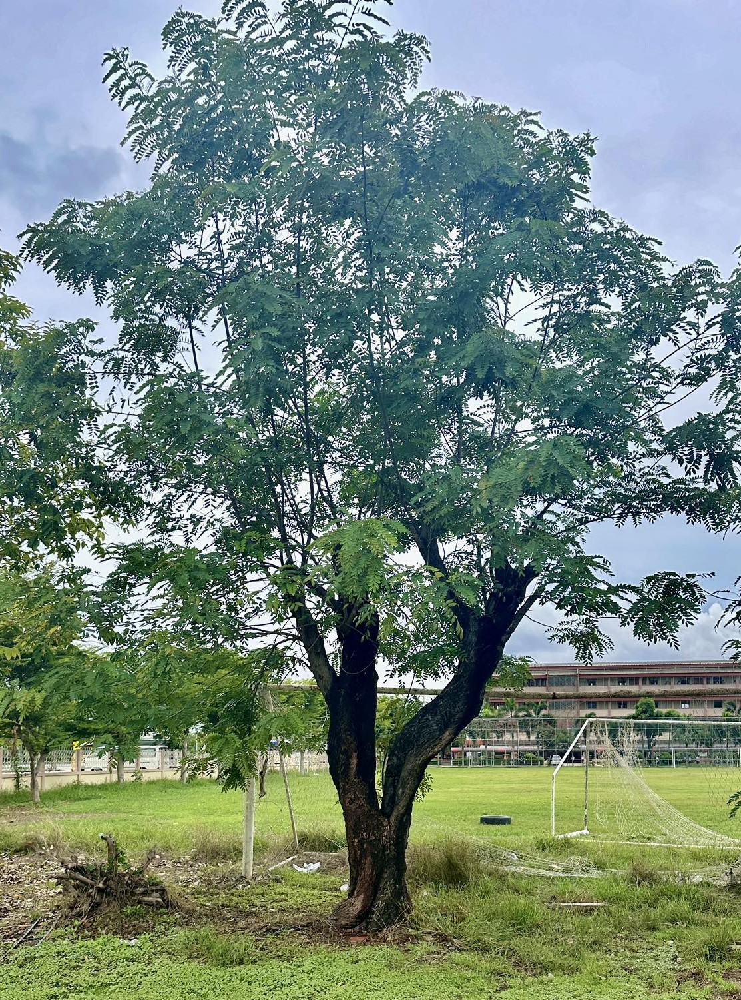
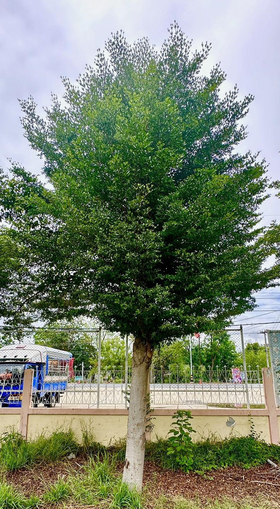
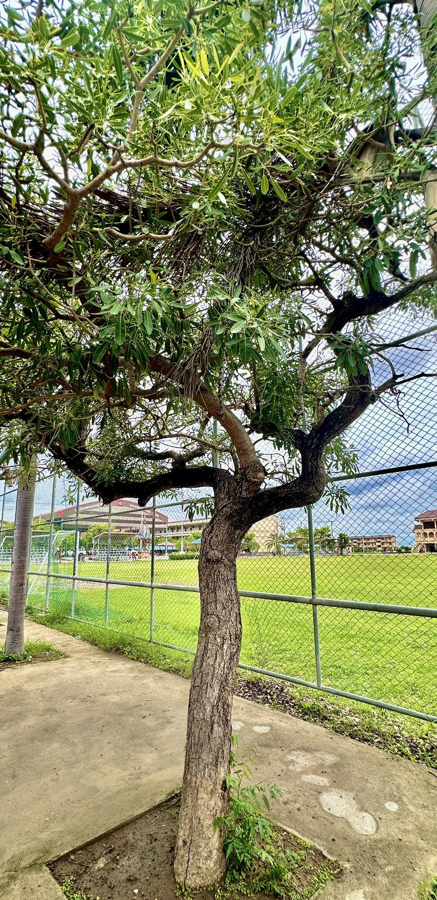
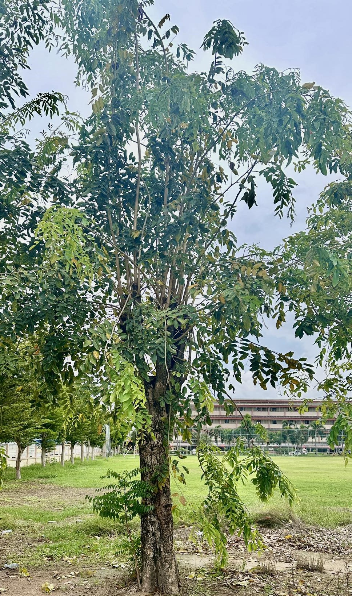

จามจุรี
ต้นจามจุรี นอกจากจะเป็นต้นไม้ใหญ่ให้ร่มเงาแล้ว ยังมีประโยชน์อีกมากมายเลยค่ะ ทั้งในด้านสมุนไพร การใช้ประโยชน์จากส่วนต่างๆ ของต้น และประโยชน์ทางนิเวศวิทยา
ใบ: ใช้ดับพิษ แก้ปวดแสบปวดร้อน
เมล็ด: แก้โรคผิวหนัง กลากเกลื้อน แก้เยื่อตาอักเสบ
เปลือกต้น: สมานแผลในปากคอ แก้โรคเหงือกบวม แก้ปวดฟัน แก้ริดสีดวงทวารหนัก แก้โลหิตตกใน
ประโยชน์ทางนิเวศวิทยา:
ดูดซับก๊าซคาร์บอนไดออกไซด์: ช่วยลดภาวะโลกร้อน
ผลิตออกซิเจน: ช่วยเพิ่มปริมาณออกซิเจนในอากาศ
เป็นแหล่งที่อยู่อาศัยของสัตว์: เช่น นก แมลง
การใช้ประโยชน์จากส่วนต่างๆ:
เนื้อไม้: ใช้ทำเฟอร์นิเจอร์ เครื่องมือทางการเกษตร
ใบ: ใช้เป็นปุ๋ยหมัก ปรับปรุงดิน
ดอก: เป็นอาหารของแมลง
ร่มเงา: ให้ร่มเงาในบริเวณกว้าง
บังลม: ช่วยลดความแรงของลม

หูหนู
ต้นหูหนู หรือที่รู้จักกันในชื่อทางวิทยาศาสตร์ว่า Ficus deltoidea เป็นไม้พุ่มขนาดเล็กที่มีประโยชน์หลากหลาย ทั้งในด้านสมุนไพรและการใช้ประโยชน์
ประโยชน์ทางสมุนไพร
ลดไข้: ใบของต้นหูหนูมีสรรพคุณในการลดไข้ ช่วยบรรเทาอาการไข้หวัดและไข้ตัวร้อน
แก้ท้องเสีย: น้ำต้มจากใบหูหนูช่วยบรรเทาอาการท้องเสียและท้องร่วง
ลดอาการอักเสบ: ช่วยลดอาการอักเสบของร่างกาย เช่น อาการปวดข้อ ปวดเมื่อยกล้ามเนื้อ
บำรุงสายตา: ช่วยบำรุงสายตา ลดอาการตาแดง ตาพร่ามัว
บำรุงโลหิต: ช่วยบำรุงโลหิต ทำให้ร่างกายแข็งแรง
รักษาแผล: ใบของต้นหูหนูสามารถนำมาตำพอกแผล ช่วยให้แผลหายเร็วขึ้น

เสม็ด
ต้นเสม็ด เป็นพืชที่มีความสำคัญต่อระบบนิเวศป่าชายเลน และยังมีประโยชน์ต่อมนุษย์อีกมากมาย โดยเฉพาะเสม็ดขาว ซึ่งเป็นสายพันธุ์ที่พบได้บ่อยในประเทศไทย
ประโยชน์ของต้นเสม็ด:
ป้องกันการกัดเซาะชายฝั่ง: รากของต้นเสม็ดช่วยยึดดินชายฝั่ง ทำให้ชายฝั่งมีความแข็งแรงและสามารถต้านทานการกัดเซาะจากคลื่นลมได้ดี
เป็นแหล่งอนุบาลสัตว์น้ำ: ป่าเสม็ดเป็นแหล่งอาศัยและอนุบาลสัตว์น้ำวัยอ่อนหลายชนิด เช่น ปลา กุ้ง หอย
เป็นแหล่งอาหาร: ผลของเสม็ดเป็นอาหารของสัตว์ป่าหลายชนิด เช่น นก และสัตว์เลี้ยงลูกด้วยนมขนาดเล็ก
ดักจับตะกอนและสารพิษ: รากและใบของเสม็ดช่วยดักจับตะกอนและสารพิษในน้ำ ทำให้น้ำทะเลสะอาดขึ้น
ผลิตออกซิเจน: เสม็ดเป็นพืชที่สามารถผลิตออกซิเจนได้ ช่วยในการปรับปรุงคุณภาพอากาศ
ปาล์มหางจิ้งจอก
ต้นปาล์มหางจิ้งจอก นอกจากจะมีรูปลักษณ์ที่สวยงามและโดดเด่นแล้ว ยังมีประโยชน์อื่นๆ อีกมากมาย โดยเฉพาะในด้านการประดับตกแต่ง เนื่องจากมีลักษณะเด่นคือใบที่แผ่ออกคล้ายหางจิ้งจอก ทำให้เป็นที่นิยมนำไปปลูกประดับสวน หรือใช้เป็นไม้กระถาง
ประโยชน์ของปาล์มหางจิ้งจอก
ไม้ประดับ: เป็นที่นิยมปลูกเป็นไม้ประดับ เนื่องจากมีรูปทรงสวยงาม ใบเขียวชอุ่ม และสามารถเติบโตได้ในหลายสภาพแวดล้อม
เพิ่มความสวยงามให้สวน: ด้วยรูปทรงที่โดดเด่น ทำให้สวนดูมีชีวิตชีวาและน่าสนใจยิ่งขึ้น
บังแดด: สามารถใช้ปลูกเป็นรั้วหรือฉากบังสายตา เพื่อให้ร่มเงาและความเป็นส่วนตัว
ปรับปรุงคุณภาพอากาศ: ช่วยดูดซับก๊าซคาร์บอนไดออกไซด์และปล่อยออกซิเจน ทำให้คุณภาพอากาศดีขึ้น
ลดมลภาวะทางเสียง: ช่วยลดเสียงรบกวนจากภายนอกได้ในระดับหนึ่ง

พยูง
ต้นพยูง เป็นไม้มีค่าชนิดหนึ่งที่มีความสำคัญทางเศรษฐกิจและวัฒนธรรมของไทยมายาวนาน ด้วยคุณสมบัติเด่นของเนื้อไม้ที่แข็งแรงทนทาน มีลวดลายสวยงาม และมีสีสันที่เป็นเอกลักษณ์ จึงทำให้ต้นพยูงเป็นที่ต้องการของตลาดทั้งในและต่างประเทศ
คุณสมบัติของต้นพยูง
เนื้อไม้แข็งแรงทนทาน: เนื้อไม้ของพยูงมีความแข็งแรง ทนทานต่อการผุพังและแมลง ทำให้เหมาะสำหรับการนำไปใช้ทำเฟอร์นิเจอร์ เครื่องดนตรี และงานแกะสลัก
ลวดลายสวยงาม: เนื้อไม้พยูงมีลวดลายที่สวยงามเป็นเอกลักษณ์ ซึ่งเกิดจากการรวมตัวกันของเส้นใยไม้ในรูปแบบต่างๆ ทำให้เกิดเป็นลวดลายที่แตกต่างกันไปในแต่ละชิ้น
สีสันสวยงาม: เนื้อไม้พยูงมีสีสันที่หลากหลาย ตั้งแต่สีน้ำตาลเข้มไปจนถึงสีดำอมม่วง ซึ่งเป็นที่ต้องการของตลาดเครื่องเรือนระดับสูง
กลิ่นหอมอ่อนๆ: เนื้อไม้พยูงมีกลิ่นหอมอ่อนๆ ซึ่งเป็นเอกลักษณ์เฉพาะตัว